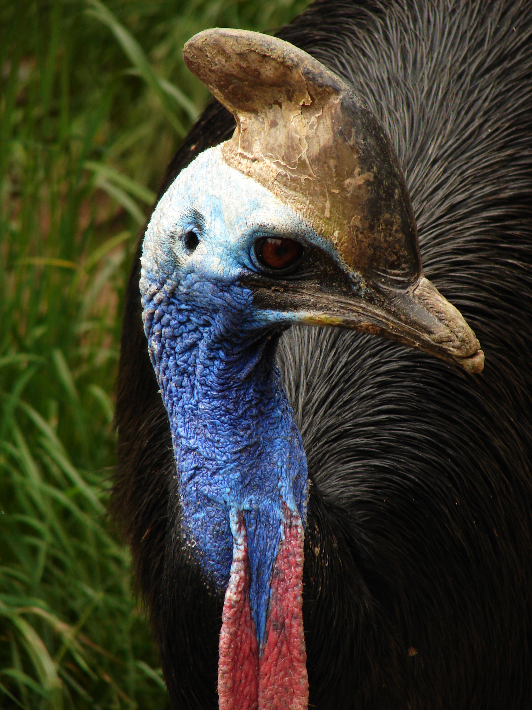
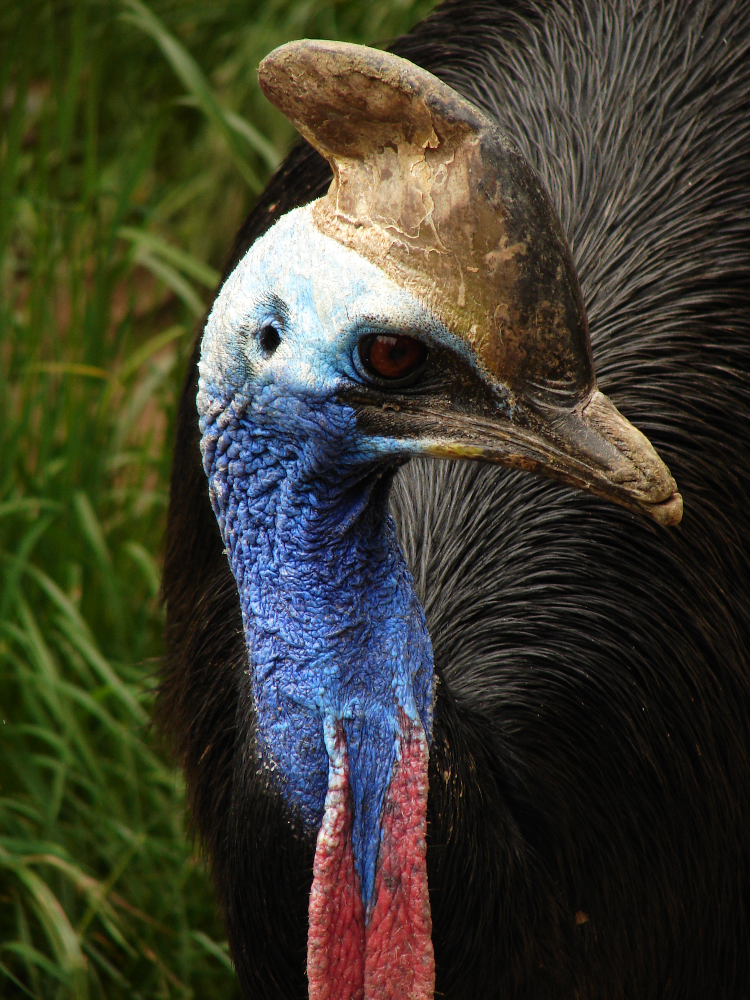

Bikolibri
Bikolibri, eller helenakolibri, är en kolibri av släktet Mellisuga.
Arten lever på Kuba på huvudön och på Isla de la Juventud och är en av femton kolibriarter som är endemiska för Västindien.
Den är med en vikt på två gram världens minsta fågel.
Dvärgpapegoja
Dvärgpapegojor är ett afrikanskt fågelsläkte inom familjen östpapegojor.
Den är 13-17 cm stora och väger 40-60 gram. De har en karakteristisk liten men kraftig kroppsbyggnad och en kort stjärt.
Detta placerar dem bland de minsta papegojorna i världen även om näbben är relativt stor med tanke på kroppens storlek.

 
